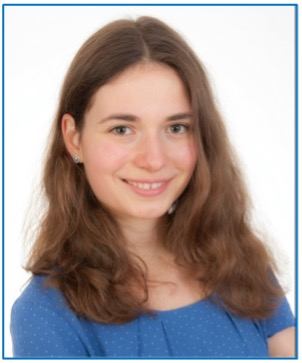

Careers for Animals is an event for students and professionals who want to discover how their work can help animals and accelerate the plant-based transition.
Students €10 · Professionals €20 · Limited capacity
Over a lifetime, you will spend roughly 80,000 hours working. Directing even a fraction of those hours toward animals can add up to an enormous positive impact. Careers for Animals is designed to kickstart that kind of career, helping you discover how your unique background and skillset can do the most good for animals.
"The event was an eye-opener for me. It's giving me hope and the courage to actually dive deeper into a career that makes me happy and has more impact." 2025 attendee

The afternoon introduces you to a wide range of career paths for helping animals and accelerating the protein transition. You will hear talks from people already building such careers, explore a career and initiatives fair, and join a workshop to map out your own next steps.
By the end of the afternoon, you will have a clearer picture of the roles and careers that can help animals and accelerate the protein transition, along with concrete next steps toward a career that makes a real difference.


Speakers from across the animal advocacy and food system landscape. Click any card to learn more.


More speakers will be announced in the coming weeks.
Our host for the event.
This event is for anyone who cares about helping animals and accelerating the food transition, and wants to take real action to change the system.
Not sure what to do with your degree? We help you see which career paths have the most impact for animals, and which skills and backgrounds the field actually needs.
Already working, but want to do more for animals and the food system? We help you think through how to put the skills you already have to work for animals.
Spots are limited. Join us in Utrecht on October 10th and spend the afternoon discovering how your career can make a real difference for animals.
Register on EventbriteEverything you need to know before you register.
Students, recent graduates, early-career professionals, and career changers who already care about animals and the food system and want to think seriously about how their working life can create more impact. Whether you are exploring this for the first time or already in the field and looking for direction, you are welcome.
No. The event is designed both for people exploring this path for the first time and for those who already care deeply but want more clarity on how to act on it effectively.
De Zalen van Zeven, Boothstraat 7, 3512 BT Utrecht. The event is fully in-person.
English, to make the event accessible to international students, professionals, and speakers.
€10 for students and €20 for professionals. If the ticket price is a barrier, reach out via the contact form explaining your situation and we will gladly provide a free ticket.
Click the Register now button to go directly to Eventbrite and complete your registration.
Reach out via the contact form below or email us directly, and we will do our best to accommodate you.
Questions, speaker suggestions, partnership inquiries, or accessibility requests? We would love to hear from you.

Partners